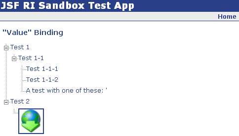

The tree component is a wrapper for the YUI JavaScript TreeView component. Here is
a sample usage:
The code snippet above will render a tree that looks like this:

The tree usage is pretty simple. A tree component has
0 or more nested treeNode components. Each treeNode requires
a label facet, which is what is rendered for that particular node, regardless of
whether its a leaf or not. Each treeNode can also have 0 or more
nested treeNode components.
Using component binding, the tree might look something like this:
with a backing bean method like: